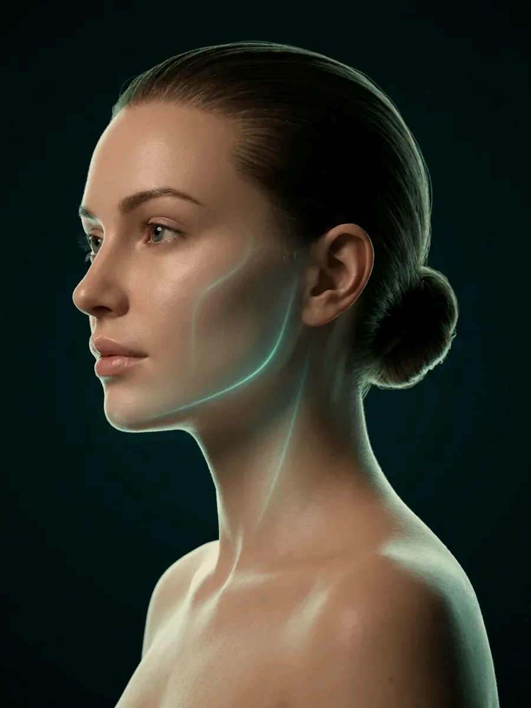

Randevudan kontrole · Kapsam
Yapmadığımız işlemler ve nedenleri
Hekimin çalışma alanı, uzmanlık belgesi ve Bakanlığın verdiği yetki belgeleriyle çizilir. Bu çerçevenin dışına çıkmak hem mevzuata aykırıdır hem de güvenli değildir. Bu sayfada muayenehanede yapılmayan işlemleri ve talebiniz kapsam dışında kaldığında nasıl bir yol izlendiğini bulacaksınız.

Temsilî görsel · yapay zekâ ile üretildiÇizilen sınır
Kapsamı ne belirler?
Ülkemizde bir hekimin neyi yapıp neyi yapamayacağı keyfî değildir. Birinci belirleyici, sınavla kazanılan ve yıllar süren eğitimle tamamlanan uzmanlık dalıdır. İkincisi, belirli uygulamalar için Sağlık Bakanlığının ayrıca verdiği sertifikalardır; her sertifikanın hangi işlemleri içerdiği tek tek tanımlıdır. Çalışma alanı, bu iki belgenin çizdiği çerçevede biter.
Uzm. Dr. Rahmi Cebeci’nin uzmanlık dalı Aile Hekimliğidir; estetik uygulamalardaki yetkisi ise Sağlık Bakanlığı onaylı Medikal Estetik Uygulama Sertifikası’na dayanır.
Muayenehanenin işi bu yüzden üç başlıkta toplanır: değerlendirme, planlama ve sertifikanın izin verdiği enjeksiyon, lazer ve cihaz uygulamaları. Ameliyat eğitimi gerektiren ya da başka bir uzmanlık dalının asıl alanına giren işler bu çerçevenin dışındadır.
Bir talebi geri çevirmek, o işlemin gereksiz ya da yanlış olduğunu söylemek anlamına gelmez; yalnızca yapılacağı yerin burası olmadığını gösterir. Bir işlemde, uygulayan kişinin o işlem için yetkin olması en az işlemin kendisi kadar önemlidir.
Yapılmayanlar
Hangi işlemler bu muayenehanenin dışında kalıyor?
Bu başlıklardan biri için gelseniz de işlem yapılmaz. Yine de şikâyetiniz dinlenir ve doğru adresin hangi uzmanlık dalı olduğu söylenir.
Cerrahi girişimler
Göz kapağı ya da burun ameliyatı, yüz germe ameliyatı, yağ aldırma, meme ve vücut şekillendirme ameliyatları, protez ve iple askılama muayenehanenin dışında kalır. Bu girişimlerin yeri ameliyathanedir; anestezi desteği ve cerrahi branş eğitimi olmadan yapılamaz. Başvurulacak adres Plastik, Rekonstrüktif ve Estetik Cerrahi başta olmak üzere ilgili cerrahi branşlardır.
Saç ekimi
Kıl köklerinin alınıp başka bölgeye taşındığı saç ekimi burada yapılmaz. Ancak dökülmenin arkasındaki nedeni aramak mümkündür: ferritin, tiroid ve diğer iç hastalık bulguları değerlendirilir, saçlı deri yakından incelenir. Uygun kişilerde saç mezoterapisi ya da saç PRP planlanabilir.
Sertifika kapsamı dışındaki işlemler
Uzmanlık belgesinin ya da medikal estetik sertifikasının kapsamına girmeyen hiçbir işlem, talep edilse de uygulanmaz. Enerji temelli cihazlarda da ölçüt aynıdır: yetkisiz kullanım hukuka aykırıdır ve yanık ya da kalıcı iz gibi sonuçlara yol açabilir.
Lazer epilasyon
Lazerle tüy azaltma bu muayenehanenin hizmetleri arasında yer almaz. Buradaki lazerler dövme silme, leke ve cilt yenileme uygulamalarında kullanılır. Tüylenmenin hormonal bir nedeni olabileceği düşünülüyorsa bu yöndeki değerlendirme muayenede konuşulabilir.
Ben ve deri oluşumlarının çıkarılması
Ben, kist ya da benzeri deri oluşumlarının kesilerek alınması burada yapılmaz; şüpheli görünen bir ben lazerle de silinmez. Boyutu, rengi ya da sınırı değişen bir ben fark edilirse dermatoloji muayenesi önerilir; gerekiyorsa cerrahi bir dal devreye girer. Patolojik incelemeden geçmemiş bir oluşumun yok edilmesi doğru değildir.
Diş, göz ve kulak burun boğaz girişimleri
Diş hekimliğinin, göz hastalıklarının ve kulak burun boğazın alanına giren girişimler burada yapılmaz. Böyle bir şikâyetiniz varsa doğru branşı muayenede birlikte belirleriz.
Başvuru yolu
Talebiniz kapsam dışında kalırsa ne olur?
Beklemeden söylenir
Talebiniz kapsam dışındaysa bunu randevunun ilk dakikalarında öğrenirsiniz. Size başka bir işlem teklif edilerek süre uzatılmaz.
Şikâyetiniz yine de değerlendirilebilir
İşlem yapılmasa da şikâyetin kendisi incelenebilir. Ekim yaptırmayı planlayan biri için dökülmenin hangi tipte olduğu ve buna eşlik eden bir iç hastalık bulunup bulunmadığı konuşulabilir; bu değerlendirme, ekimi yapacak hekime de fikir verir.
Uygun uzmanlık dalı söylenir
Hangi dala başvurmanızın doğru olacağı ve o başvuruda yanınıza hangi bilgileri almanızın faydalı olacağı anlatılır. Bu sayfada belli bir kurumun ya da hekimin adı geçmez; yol gösterme branş düzeyinde kalır ve yalnızca muayenede yapılır.
Sonrası için kapı açık
Başka bir merkezde yapılmış bir işlemin ardından bir sorunla karşılaşırsanız, değerlendirme için muayeneye gelebilirsiniz. Dolgu sonrasında geç ortaya çıkan şişlik ve sertlikler, dolgu sayfasındaki istenmeyen durumlar bölümünde anlatılıyor.
Neden böyle
Sınırı yazıya dökmek neden önemli?
Sınırı yazılı olmayan bir muayenehanede her yeni istek “bunu da yapalım mı?” sorusunu doğurur. Bu soru sık sorulduğunda yetkinliğin kenarı zamanla silikleşir. Kapsamın baştan ve herkesin görebileceği biçimde yazılması, hekimi de başvuran kişiyi de bu kaymaya karşı korur.
Açıklık zamandan da tasarruf ettirir: talebiniz bu listedeyse randevu sırası beklemeden ilgili branşa gidebilirsiniz. Bu sayfa bunun için yazıldı.
“Neyin yapılmayacağını söylemek de hekimliğin bir parçasıdır.”
 Temsilî görsel · yapay zekâ ile üretildi
Temsilî görsel · yapay zekâ ile üretildiSormaktan çekinmeyin
İşlemi yapacak kişiye hekim olup olmadığını, bu işleme ilişkin yetki belgesinin bulunup bulunmadığını işlemden önce sorabilirsiniz; bu sizin hakkınızdır.
Randevudan önce sorun
Bir telefonla, isteğinizin burada karşılanıp karşılanmadığını öğrenebilirsiniz.
İletişime geçinYetkisiz ellerde yapılan girişimsel işlemlerin sonucu yanık, kalıcı iz, cilt renginde bozulma ya da damar tıkanması olabilir. İşlem nerede yapılırsa yapılsın, uygulayıcının hekim olduğunu ve o işlem için yetkili olduğunu önceden doğrulayın.
Herhangi bir uygulamanın ardından nefes almakta zorlanırsanız, yüzünüz ya da diliniz aniden şişerse, işlem bölgesinde hızla yayılan solukluk, dayanılmaz ağrı veya görmede bozulma olursa randevuyu beklemeyin: vakit kaybetmeden size en yakın acil servise başvurun ya da 112’yi arayın.
Sık gelen sorular
Merak ettiğiniz soruya dokunun, yanıtı burada açılsın
Okumaya devam
Buradan devam edin
Burada yapılan uygulamalar
Muayenehanede planlanabilen enjeksiyon, lazer, cihaz ve saç uygulamalarının tam listesi.
Listeye gitHekim
Uzm. Dr. Rahmi Cebeci: eğitim, aile hekimliği uzmanlığı ve medikal estetik sertifikası.
OkuDolgu uygulamaları
Dolgu sonrası şişlik ve sertlik gibi istenmeyen durumlar ve bunların nasıl değerlendirildiği.
OkuSaç dökülmesi
Dökülmenin tipini ve arkasındaki nedenleri anlamaya yönelik değerlendirme; ekim düşünenler için de.
OkuRandevudan kontrole
Muayene, plan, uygulama günü ve takip: dört adımın sırası ve gerekçesi.
OkuBir adım ötesi
Emin değilseniz randevudan önce sorun
İsteğinizin bu muayenehanenin kapsamına girip girmediğini bir telefon ya da WhatsApp mesajıyla öğrenebilirsiniz.
Metni hazırlayan ve tıbbi açıdan gözden geçiren: Uzm. Dr. Rahmi Cebeci (Aile Hekimliği Uzmanı · Medikal Estetik Sertifikalı).
Buradaki anlatım herkese yöneliktir; size özel bir teşhis ya da tedavi planı sunmaz, muayenenin yerini tutmaz. Her uygulamanın etkisi kişiye göre farklı olur.